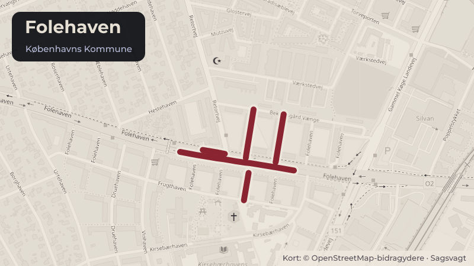

Besluttet 16. juni, Økonomiudvalget
Ændret fysisk helhedsplan, Boligforeningen 3B, Folehaven, Valby

Kort fortalt
- Hvem
- Økonomiudvalget
- Hvornår
- Tirsdag 16. juni 2026
- Status
- Besluttet. Klima-, Miljø- og Teknikudvalget anbefaler over for Økonomiudvalget og Borgerrepræsentationen, • at godkende ændringer i renoveringsprojektet for Boligforeningen 3B, Folehaven. • at Klima-, Miljø- og Teknikudvalget bemyndiges til at stille kommunal garanti til renoveringen af Folehaven på op til 100% for realkreditlån på 1.544,7 mio.kr., under forudsætning af, at de endelige lån ikke afviger væsentligt i forhold det oplyste, jf. bilag 3. • at Klima-, Miljø- og Teknikudvalget bemyndiges til at godkende det endelige projekt og anskaffelsessum under forudsætning af, at der ikke er væsentlige afvigelser i forhold til det oplyste, jf. bilag 2 og 3.
- Næste skridt
- Når Borgerrepræsentationen har godkendt indstillingen, vil Klima-, Miljø- og Teknikforvaltningen meddele tilsagn (Skema B), hvorefter renoveringsarbejderne og nybyggeriet kan påbegyndes.
Er noget forkert her? Skriv til os
Sagens vej
- 1. juniKlima-, Miljø- og TeknikudvalgetAnbefalet
- 16. juniØkonomiudvalgetBesluttet
- 25. juniBorgerrepræsentationenGodkendt
Læs hele sagen Kommunens egen tekst
Indstilling
Økonomiforvaltningen indstiller, at Økonomiudvalget oversender sagen til Borgerrepræsentationen med følgende erklæring:
Økonomiudvalget forudsætter, at eventuelle merudgifter, som følge af sagen, afholdes inden for Klima-, Miljø- og Teknikudvalgets budgetramme.
Problemstilling
Borgerrepræsentationens
har den 16. december 2021 godkendt en budgetramme for projektet på 910,4 mio.
kr. under forudsætning af, at der ikke var væsentlige ændringer i forhold til
det oplyste. Sagen genindstilles, da den samlede anskaffelsessum for projektet
overstiger den oprindelige ramme. Borgerrepræsentationen skal derfor godkende
det ændrede projekt.
Løsning
Teknik-
og Miljøforvaltningen meddelte den 16. december 2021 skema A tilsagn til
Boligforeningen 3B, Folehaven med en anskaffelsessum på 910,4 mio. kr.
Byggeomkostningerne er steget væsentligt i perioden fra 2021 til 2026 og
renoveringen bliver dyrere end forudsat. Størstedelen af arbejderne støttes af
Landsbyggefonden. Arbejderne er som forventet ved skema A og består af
bygningsrenovering, fornyelse af udearealer og ændring af boligudbuddet.
Boligerne i Folehaven varierer fra 1-4 rumsboliger. Der etableres ny
tagbelægning, forbedring af klimaskærm, ventilation, renovering af alle
badeværelser samt fornyelse af installationer. De medfølgende merudgifter
betyder, at anskaffelsessummen stiger med 634,3 mio. kr. til i alt 1.544,7 mio.
kr. Landsbyggefonden har godkendt overskridelsen under forudsætning af
Københavns Kommunes godkendelse.
Husleje
Afdelingen
har en gennemsnitlig husleje på 938 kr. pr. m2 pr. år. eksklusive forbrug. De i
2021 godkendte renoveringsarbejder var skønnet til at medføre en gennemsnitlig
huslejeforhøjelse pr. 189 kr. pr. m2 pr. år i 2021-niveau. Det nye projekt vil
medføre en gennemsnitlig huslejestigning på 244 kr. pr. m2 pr. år. Den
månedlige husleje fremgår af nedenstående tabel.
Tabel
1 Huslejeberegning pr. boligtype
Husleje pr. m2
Månedlig husleje*
Nuværende leje kr. / m² / år
Fremtidig leje kr. / m² / år
Stigning i kr.
kr. / m² / år
Nuværende leje kr./md. i gns.
Fremtidig leje kr./md. i gns.
2-rums familiebolig (66 m2)
938
kr.
1.187
kr.
244
kr. pr. m2
5159
kr.
6528
kr.
3-rums familiebolig
(77 m2)
938
kr.
1.187
kr.
244
kr. pr. m2
6018
kr.
7616
kr.
4-rumsbolig
familiebolig
(85 m2)
938
kr.
1.187
kr.
244
kr. pr. m2
6644
kr.
8407
kr.
Ungdomsbolig
(46 m2)
738
kr.
982
kr.
244
kr. pr. m2
2.829
kr.
3.764
kr.
*Den
månedlige husleje er eksklusive forbrug og i 2026-niveau.
Genhusning
Boligforeningen
3B har oplyst, at omfanget og typen af arbejder betyder, at genhusning er
nødvendig. Beboerne tilbydes midlertidig eller, hvis det er muligt permanent
genhusning.
Beboerdemokrati
Beboerne
har godkendt huslejestigningen på et ekstraordinært afdelingsmøde den 22. april
2026. Huslejestigningen er godkendt af organisationsbestyrelsen den 26. marts
2026.
Fortætning
Som en
del af helhedsplanen bliver der i seks udvalgte blokke udført 60 nye tagboliger
hvoraf 12 af boligerne er billige boliger målrettet boligsocial anvisning.
Nybyggeriet udføres i samspil med renoveringen og forventes sammenlagt med
Folehaven, når arbejderne er overstået. Ændringerne i boligudbuddet vil bidrage
med tilskud af større boliger og give Folehaven et udbud af attraktive boliger,
der kan tiltrække og fastholde en mere blandet beboersammensætning.
Politisk handlerum
Hvis
indstillingen ikke godkendes, vil det medføre, at afdelingen ikke bliver
renoveret med støtte fra Landsbyggefonden. Det må forventes, at mange af
arbejderne alligevel skal gennemføres inden for en kortere årrække.
Huslejestigningen vil blive højere for disse arbejder, da afdelingen ikke vil
modtage støtte fra Landsbyggefonden.
Økonomi
Ændringerne
i projektet indebærer, at kommunen skal godkende at stille kommunal garanti for
lån på op til 100% for de samlede realkreditlån på 1.544,7 mio.kr.
Kommunens
garantistillelse er en forudsætning for, at Landsbyggefonden vil yde støtte i
form af regaranti og ydelsesstøtte til renoveringen, jf. almenboliglovens
regler herom. Størrelsen på garantien afklares med boligorganisationen og
långiver inden for den afsatte ramme i forbindelse med byggeregnskabet.
Landsbyggefonden regaranterer for 50% af kommunens
garanti for et støttet lån på i alt ca. 790,7 mio. kr. Det betyder, at
kommunens samlede nettogaranti maksimalt vil udgøre 395 mio. kr. for dette lån.
Landsbyggefonden regaranterer ikke det ustøttede lån på 562 mio. kr. Kommunens økonomiske
medvirken er nærmere beskrevet i bilag 3.
Det
bemærkes, at Borgerrepræsentationen har godkendt en kapitaltilførsel (lån) på
0,40 mio. kr. ved skema A godkendelsen den 16. december 2021.
Videre proces
Når
Borgerrepræsentationen har godkendt indstillingen, vil Klima-, Miljø- og
Teknikforvaltningen meddele tilsagn (Skema B), hvorefter renoveringsarbejderne
og nybyggeriet kan påbegyndes.
Der vil
senere blive forelagt indstilling til Klima-, Miljø- og Teknikudvalget om de
endelige kommunale garantier for lån til arbejderne.
Oversigt over politisk behandling
Klima-, Miljø- og Teknikforvaltningen indstiller, at Klima-, Miljø- og Teknikudvalget over for Økonomiudvalget og Borgerrepræsentationen anbefaler,
• at godkende ændringer i renoveringsprojektet for Boligforeningen 3B, Folehaven.
• at Klima-, Miljø- og Teknikudvalget bemyndiges til at stille kommunal garanti til renoveringen af Folehaven på op til 100% for realkreditlån på 1.544,7 mio.kr., under forudsætning af, at de endelige lån ikke afviger væsentligt i forhold det oplyste, jf. bilag 3.
• at Klima-, Miljø- og Teknikudvalget bemyndiges til at godkende det endelige projekt og anskaffelsessum under forudsætning af, at der ikke er væsentlige afvigelser i forhold til det oplyste, jf. bilag 2 og 3.
Klima-, Miljø- og Teknikudvalgets beslutning den 1. juni 2026
Indstillingen blev anbefalet over for Økonomiudvalget og Borgerrepræsentationen uden afstemning.
Beslutning
Klima-, Miljø- og Teknikudvalget anbefaler over for Økonomiudvalget og Borgerrepræsentationen,
• at godkende ændringer i renoveringsprojektet for Boligforeningen 3B, Folehaven.
• at Klima-, Miljø- og Teknikudvalget bemyndiges til at stille kommunal garanti til renoveringen af Folehaven på op til 100% for realkreditlån på 1.544,7 mio.kr., under forudsætning af, at de endelige lån ikke afviger væsentligt i forhold det oplyste, jf. bilag 3.
• at Klima-, Miljø- og Teknikudvalget bemyndiges til at godkende det endelige projekt og anskaffelsessum under forudsætning af, at der ikke er væsentlige afvigelser i forhold til det oplyste, jf. bilag 2 og 3.
Bilag
- Bilag 1 - Overblik over politisk behandling
- Bilag 2 - Folehaven Skema B
- Bilag 3 - Økonomi for Folehaven
Kilde: Københavns Kommune, Økonomiudvalget, referat fra mødet tirsdag 16. juni 2026, punkt 29. Læs den originale sag hos kommunen.
Steder i sagen: Folehaven